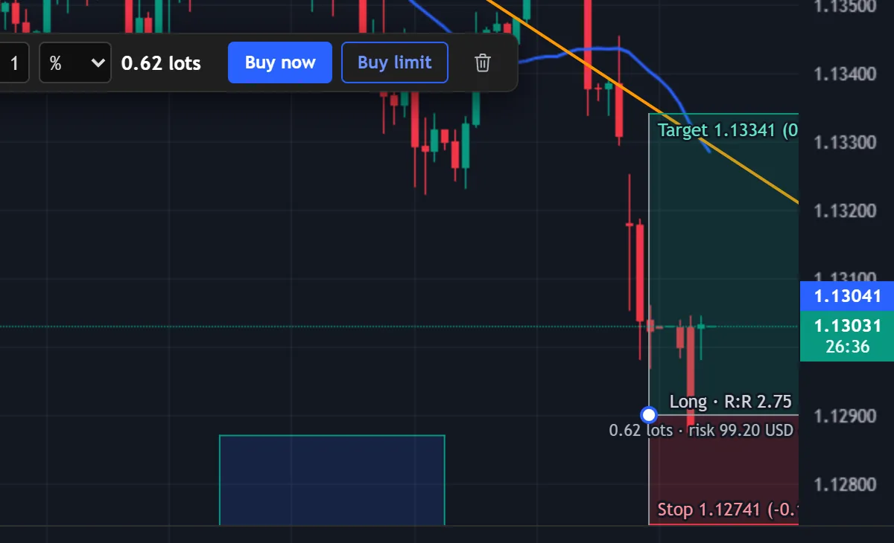

Draw the trade, then send it
A long or short position box sits on the chart as it does in TradingView: entry, stop loss, target and the risk-to-reward ratio. In CheapTrader the box can also place the trade. Buy now or Sell now sends a market order with the box’s stop and target. Buy limit leaves a pending order at the box’s entry. The size comes from the distance to the stop: a percentage of your balance, a fixed amount of money, or a number of lots.
- Orders
- Market, limit and stop. Waiting orders are drawn on the chart and can be dragged.
- Stop and target
- Drag the tags on the chart or type the price. Both go to the broker with the order.
- Drawings
- Trend line, rectangle, parallel channel and the two position boxes. Saved per symbol; each one can be locked.
